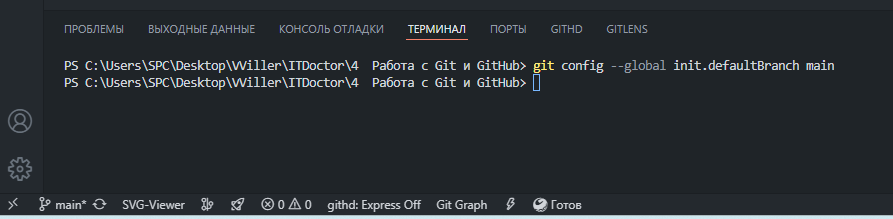
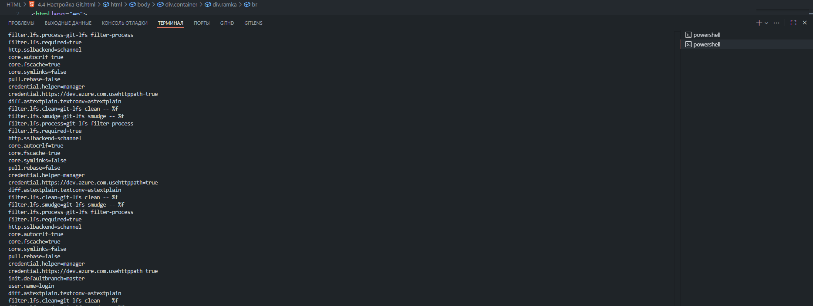

После установки системы Git необходимо ее настроить для конкретного пользователя. Важной особенностью Git
является то,
что первоначальные настройки сохраняются и после обновления его версии. В тоже время, при необходимости вы
можете их
изменить, выполнив снова те же самые команды.
Все настройки, которые вы установите, сохраняются в специальной утилите gitconfig. Данная утилита также
определяет
особенности операций в Git и, в целом, интерфейс системы.
Давайте узнаем какие настройки Git есть в нашей системе, а также в каких файлах они располагаются. Для этого
нужно
запустить терминал от имени администратора и ввести в него следующую команду:
Когда над проектом работают несколько человек, удобно иметь возможность понять, кем именно написан данный
кусок кода.
Поэтому Git автоматически оставляет имя автора куска кода и его email для связи.
Поэтому, изначально имя автора и email следует настроить. Давайте посмотрим, с помощью каких команд это
делается.
Если вы хотите, чтобы имя пользователя применялось ко всем проектам, с которыми вы работаете, в команду
добавляется
опция --global:
Если же в каком-нибудь конкретном проекте вам нужно изменить имя пользователя или его почту, то следует через терминал перейти в конкретный каталог и ввести там команду без опции --global:
После того, как вы настроили имя пользователя, необходимо выбрать текстовой редактор для отправки сообщений в
Git.
Давайте для примера настроим для Windows текстовой редактор Notepad++. Для этого в терминале после команды
core.editor
нужно открыть двойные кавычки, затем указать в одинарных кавычках полный путь к файлу, в котором находится
выбранный
вами текстовой редактор. Добавляем опции -multiInst, --notabbar, -nosession и -noPlugin и закрываем
двойные
кавычки:
Очень важный нюанс состоит в том, что выбранный редактор должен быть уже установлен в вашей операционной системе. Если же вы укажете несуществующий редактор, то в дальнейшем могут происходить неожиданные сбои в работе Git. Поэтому вначале установите текстовой редактор и уже после этого указывайте его в настройках.
В самом начале работы с проектом система Git создает для вас главную ветку с именем master, в которой будет
хранится
основной репозиторий с проектом.
Начиная с версии 2.28, есть возможность назначить любое имя для главной ветки. Давайте посмотрим, как это
делается.
Сменим, например, имя главной ветки на main. Для этого нужно ввести следующую команду:
После этого в дальнейшем при создании репозитория Git создаст ветку main.
Чтобы проверить, что настройки Git настроены правильно, можно выполнить следующую команду:
Выведите в терминал список всех ваших настроек Git.
Если нам нужно узнать настройку конкретного параметра, например текстового редактора для отправки сообщений, то мы вводим в команду имя интересующего нас параметра:
Проверьте какое имя пользователя задано в ваших настройках Git.